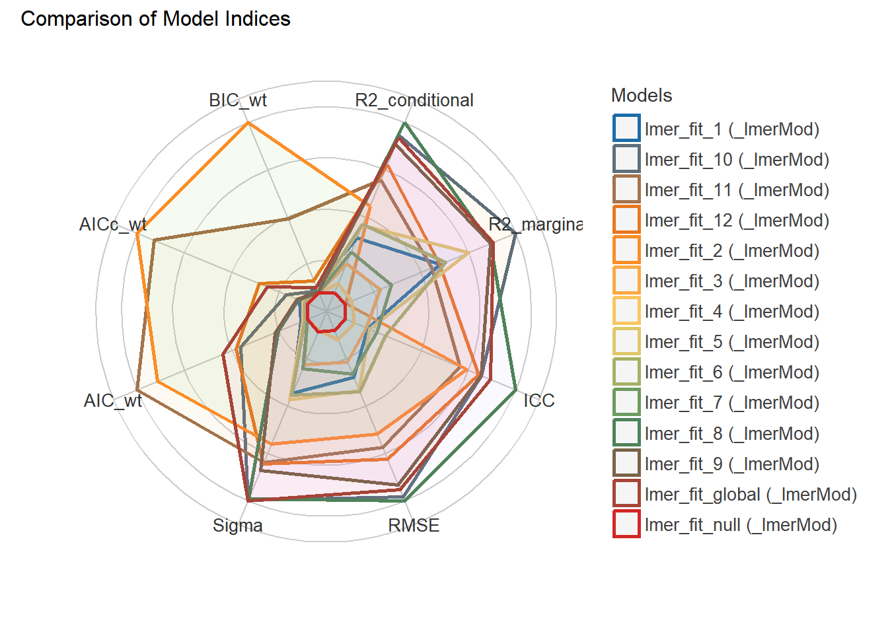

Warning: package 'dials' was built under R version 4.2.2
Warning: package 'infer' was built under R version 4.2.2
Warning: package 'modeldata' was built under R version 4.2.2
Warning: package 'recipes' was built under R version 4.2.2
Warning: package 'rsample' was built under R version 4.2.2
Warning: package 'tune' was built under R version 4.2.2
Warning: package 'workflows' was built under R version 4.2.2
Warning: package 'workflowsets' was built under R version 4.2.2
Warning: package 'yardstick' was built under R version 4.2.2
── Conflicts ───────────────────────────────────────── tidymodels_conflicts() ──
✖ purrr::discard() masks scales::discard()
✖ dplyr::filter() masks stats::filter()
✖ dplyr::lag() masks stats::lag()
✖ recipes::step() masks stats::step()
• Learn how to get started at https://www.tidymodels.org/start/
library(lme4)
Warning: package 'lme4' was built under R version 4.2.2
Loading required package: Matrix
Warning: package 'Matrix' was built under R version 4.2.2
Attaching package: 'Matrix'
The following objects are masked from 'package:tidyr':
expand, pack, unpack
library(sjPlot) #to help plot models
Warning: package 'sjPlot' was built under R version 4.2.2
library(performance) #evaluate model fit and performance
Warning: package 'performance' was built under R version 4.2.2
Attaching package: 'performance'
The following objects are masked from 'package:yardstick':
mae, rmse
#path to datadata_location <- here::here("2 Clean Data","stork_AMR_2021.rds")#load data. data <-readRDS(data_location)
Data fitting/statistical analysis
Data of interest: Landfill use index (LUI) and multi-drug resistence (MDR) throughout the different sampling periods during the stork breeding season.
We’ll start by fitting two models. We will used mixed-effects models to control for repeated sampling of the same nest. The design is unbalanced, thus we cannot use a repeated measures anova.
We’ll start with a single factor repeated measures evaluation the effect of LUI on blaTEM (betalactam) resistence gene burden.
data(data, package ="lme4")
Warning in data(data, package = "lme4"): data set 'data' not found
data %>%ggplot(aes(x = samp, y = Burden)) +geom_point() +geom_line() +facet_wrap(~ nes)
`geom_line()`: Each group consists of only one observation.
ℹ Do you need to adjust the group aesthetic?
`geom_line()`: Each group consists of only one observation.
ℹ Do you need to adjust the group aesthetic?
`geom_line()`: Each group consists of only one observation.
ℹ Do you need to adjust the group aesthetic?
`geom_line()`: Each group consists of only one observation.
ℹ Do you need to adjust the group aesthetic?
Warning: When comparing models, please note that probably not all models were fit
from same data.

Summarize and graph best model (lowwest AIC)
lmer_fit_11
parsnip model object
Linear mixed model fit by REML ['lmerMod']
Formula: MDR ~ s.lui + s.age + (1 | nes)
Data: data
REML criterion at convergence: 79.8666
Random effects:
Groups Name Std.Dev.
nes (Intercept) 0.2300
Residual 0.4517
Number of obs: 51, groups: nes, 19
Fixed Effects:
(Intercept) s.lui s.age
0.49552 -0.12785 0.01239
# place results from fit into a data frame with the tidy functionmodel1 <- broom::tidy(lmer_fit_11)print(model1)
# A tibble: 5 × 6
effect group term estimate std.error statistic
<chr> <chr> <chr> <dbl> <dbl> <dbl>
1 fixed <NA> (Intercept) 0.496 0.0840 5.90
2 fixed <NA> s.lui -0.128 0.0872 -1.47
3 fixed <NA> s.age 0.0124 0.0839 0.148
4 ran_pars nes sd__(Intercept) 0.230 NA NA
5 ran_pars Residual sd__Observation 0.452 NA NA
# save fit results table model1 =here("4 Results", "Models", "LMERmodel1.rds")saveRDS(model1, file = model1)MLp <-plot_model(lmer_fit_11,terms ='s.lui', type="pred", show.data =TRUE, show.values =TRUE, show.p =TRUE,title ="", show.legend =TRUE, line.size=1,axis.title =c("Landfill Use Index",'Multi-Drug Resistence'))MLp
Random effect variances not available. Returned R2 does not account for random effects.
Random effect variances not available. Returned R2 does not account for random effects.
Random effect variances not available. Returned R2 does not account for random effects.
Random effect variances not available. Returned R2 does not account for random effects.
Random effect variances not available. Returned R2 does not account for random effects.
Random effect variances not available. Returned R2 does not account for random effects.
Random effect variances not available. Returned R2 does not account for random effects.
Warning: When comparing models, please note that probably not all models were fit
from same data.
Random effect variances not available. Returned R2 does not account for random effects.
Random effect variances not available. Returned R2 does not account for random effects.
Random effect variances not available. Returned R2 does not account for random effects.
Random effect variances not available. Returned R2 does not account for random effects.
Random effect variances not available. Returned R2 does not account for random effects.
Random effect variances not available. Returned R2 does not account for random effects.
Random effect variances not available. Returned R2 does not account for random effects.
Warning: When comparing models, please note that probably not all models were fit
from same data.
Warning: Following indices with missing values are not used for ranking:
R2_conditional, ICC
Summarize and graph best model (lowwest AIC)
lmer_fit2_5
parsnip model object
Linear mixed model fit by REML ['lmerMod']
Formula: Burden ~ s.lui + samp + (1 | nes)
Data: data
REML criterion at convergence: 561.9448
Random effects:
Groups Name Std.Dev.
nes (Intercept) 6.747
Residual 38.950
Number of obs: 57, groups: nes, 21
Fixed Effects:
(Intercept) s.lui samp
0.958 3.163 12.414
# place results from fit into a data frame with the tidy functionmodel2 <- broom::tidy(lmer_fit2_5)print(model2)
# A tibble: 5 × 6
effect group term estimate std.error statistic
<chr> <chr> <chr> <dbl> <dbl> <dbl>
1 fixed <NA> (Intercept) 0.958 14.1 0.0681
2 fixed <NA> s.lui 3.16 5.48 0.578
3 fixed <NA> samp 12.4 6.34 1.96
4 ran_pars nes sd__(Intercept) 6.75 NA NA
5 ran_pars Residual sd__Observation 39.0 NA NA